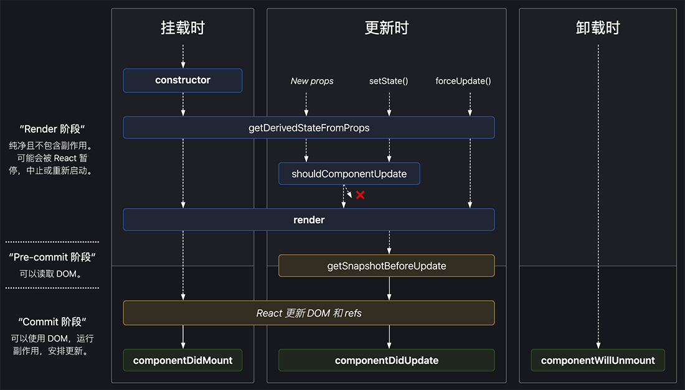
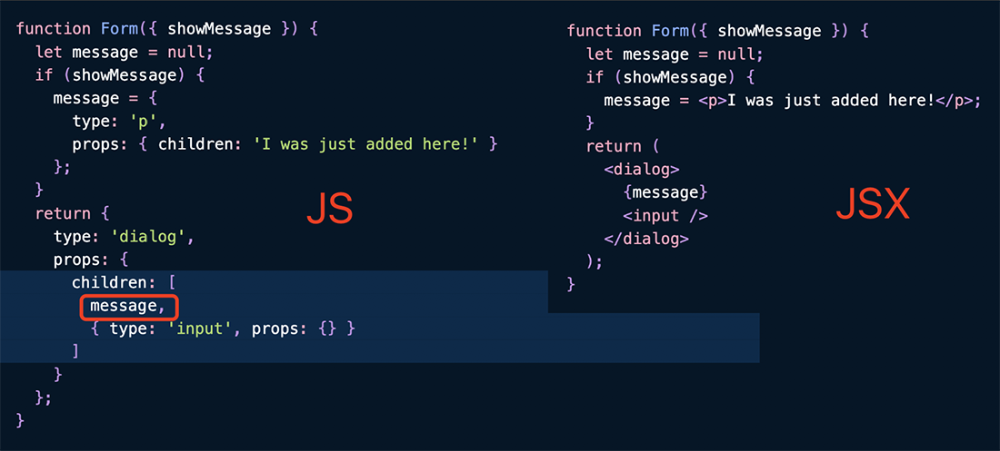

<!DOCTYPE html><html lang="en-us"><head><meta charset="UTF-8"><meta http-equiv="X-UA-Compatible" content="IE=edge,chrome=1"><title>React 特性小结（v17.0.1） | 曜彤.手记</title><meta name="description" content="记录一些之前理解了然后又忘了的知识点。"><meta name="generator" content="曜彤.手记"><meta name="author" content="于航(曜彤)"><meta name="keywords" content="博客, C++, C, VB, Web, Java, IT, 编程, 开发, Android, Python, MySQL, 科技, 黑客, 技术, Javascript, 云, 大数据, 计算, 机器学习, AI, 人工智能, 创业, 产品, 公司, WebAssembly, Wasm"><meta name="HandheldFriendly" content="True"><meta name="MobileOptimized" content="320"><meta name="viewport" content="width=device-width,initial-scale=1.0,maximum-scale=1,user-scalable=0"><link rel="stylesheet" type="text/css" href="/styles/screen.css"><link rel="apple-touch-icon" sizes="57x57" href="/images/apple-touch-icon-57x57.jpg"><link rel="apple-touch-icon" sizes="60x60" href="/images/apple-touch-icon-60x60.jpg"><link rel="apple-touch-icon" sizes="72x72" href="/images/apple-touch-icon-72x72.jpg"><link rel="apple-touch-icon" sizes="76x76" href="/images/apple-touch-icon-76x76.jpg"><link rel="apple-touch-icon" sizes="114x114" href="/images/apple-touch-icon-114x114.jpg"><link rel="apple-touch-icon" sizes="120x120" href="/images/apple-touch-icon-120x120.jpg"><link rel="apple-touch-icon" sizes="144x144" href="/images/apple-touch-icon-144x144.jpg"><link rel="apple-touch-icon" sizes="152x152" href="/images/apple-touch-icon-152x152.jpg"><link rel="apple-touch-icon" sizes="196x196" href="/images/apple-touch-icon-196x196.jpg"><link rel="apple-touch-icon" sizes="310x310" href="/images/apple-touch-icon-310x310.jpg"><link href="/images/splash/iphone5_splash.png" media="(device-width: 320px) and (device-height: 568px) and (-webkit-device-pixel-ratio: 2)" rel="apple-touch-startup-image"><link href="/images/splash/iphone6_splash.png" media="(device-width: 375px) and (device-height: 667px) and (-webkit-device-pixel-ratio: 2)" rel="apple-touch-startup-image"><link href="/images/splash/iphoneplus_splash.png" media="(device-width: 621px) and (device-height: 1104px) and (-webkit-device-pixel-ratio: 3)" rel="apple-touch-startup-image"><link href="/images/splash/iphonex_splash.png" media="(device-width: 375px) and (device-height: 812px) and (-webkit-device-pixel-ratio: 3)" rel="apple-touch-startup-image"><link href="/images/splash/iphonexr_splash.png" media="(device-width: 414px) and (device-height: 896px) and (-webkit-device-pixel-ratio: 2)" rel="apple-touch-startup-image"><link href="/images/splash/iphonexsmax_splash.png" media="(device-width: 414px) and (device-height: 896px) and (-webkit-device-pixel-ratio: 3)" rel="apple-touch-startup-image"><link href="/images/splash/ipad_splash.png" media="(device-width: 768px) and (device-height: 1024px) and (-webkit-device-pixel-ratio: 2)" rel="apple-touch-startup-image"><link href="/images/splash/ipadpro1_splash.png" media="(device-width: 834px) and (device-height: 1112px) and (-webkit-device-pixel-ratio: 2)" rel="apple-touch-startup-image"><link href="/images/splash/ipadpro3_splash.png" media="(device-width: 834px) and (device-height: 1194px) and (-webkit-device-pixel-ratio: 2)" rel="apple-touch-startup-image"><link href="/images/splash/ipadpro2_splash.png" media="(device-width: 1024px) and (device-height: 1366px) and (-webkit-device-pixel-ratio: 2)" rel="apple-touch-startup-image"><link rel="icon" type="image/png" sizes="16x16" href="/images/favicon-16x16.png"><link rel="icon" type="image/png" sizes="32x32" href="/images/favicon-32x32.png"><link rel="icon" type="image/png" sizes="96x96" href="/images/favicon-96x96.png"><link rel="icon" type="image/png" sizes="128x128" href="/images/favicon-128.png"><link rel="icon" type="image/png" sizes="196x196" href="/images/favicon-196x196.png"><meta name="msapplication-TileColor" content="#FFFFFF"><meta name="msapplication-TileImage" content="mstile-144x144.png"><meta name="msapplication-square70x70logo" content="mstile-70x70.png"><meta name="msapplication-square150x150logo" content="mstile-150x150.png"><meta name="msapplication-wide310x150logo" content="mstile-310x150.png"><meta name="msapplication-square310x310logo" content="mstile-310x310.png"><meta name="msapplication-square310x310logo" content="mstile-310x310.png"><link rel="manifest" href="/manifest.webmanifest"><link rel="alternate" type="application/atom+xml" title="Atom 0.3" href="/atom.xml"><link rel="stylesheet" href="/css/prism-okaidia.css" type="text/css">
<link rel="stylesheet" href="/css/prism-line-numbers.css" type="text/css"></head><body itemscope itemtype="https://schema.org/WebPage"><div class="canvas-containter"><span>X</span></div><header itemscope itemtype="https://schema.org/WPHeader"><div class="logo"></div><h1 class="title"><a href="/" alt="曜彤.手记" title="曜彤.手记" itemprop="headline">曜彤.手记</a><a title="Atom 0.3" target="__blank" href="/atom.xml" class="rss"></a></h1><p itemprop="description" class="description">随记，关于互联网技术、产品与创业</p><nav itemscope itemtype="https://schema.org/SiteNavigationElement"><ul><li itemprop="name" class="menu-item"><a href="/ " alt="首页" title="首页" itemprop="url">首页</a></li><li itemprop="name" class="menu-item"><a href="/articles" alt="文章" title="文章" itemprop="url">文章</a></li><li itemprop="name" class="menu-item"><a href="/works" alt="作品" title="作品" itemprop="url">作品</a></li><li itemprop="name" class="menu-item"><a href="/readings" alt="阅读" title="阅读" itemprop="url">阅读</a></li><li itemprop="name" class="menu-item"><a href="/tags" alt="标签" title="标签" itemprop="url">标签</a></li><li itemprop="name" class="menu-item"><a href="/author" alt="关于" title="关于" itemprop="url">关于</a></li></ul></nav><p class="meta-icp"><a target="_blank" href="https://beian.miit.gov.cn/"><span>吉 ICP 备10004938号</span></a></p><div class="space"></div></header><main itemscope itemtype="https://schema.org/Blog"><script src="https://shadow.elemecdn.com/npm/zoomage.js@latest/dist/zoomage.min.js" type="text/javascript"></script><script src="https://shadow.elemecdn.com/npm/axios@0.18.0/dist/axios.min.js" type="text/javascript"></script><script src="/scripts/post.js" type="text/javascript"></script><div class="touch-top"><span></span></div><article post-id="0dd141baa3cb805174084c722f034350" class="full"><h1 itemprop="headline" class="post-heading">React 特性小结（v17.0.1）</h1><div class="article-meta"><span class="post-meta"><br>Created on<time itemprop="dateCreated" datetime="2021-02-17T06:27:54.000Z"> 2021 / 02 / 17, 14:27:54</time></span><span class="page-tag-anchor"><a href="/tags/React" itemprop="url">#React</a>&nbsp;&nbsp;</span></div><br><p>记录一些之前理解了然后又忘了的知识点。</p>
<ol>
<li>所有 React 组件都必须像纯函数一样确保<strong>它们的 props 不被更改</strong>；</li>
<li>出于性能考虑，React 可能会把多个 <code>setState()</code> 调用合并成一个调用。在需要依赖值以更新下一个状态时，可以使用该方法的另一个形式：</li>
</ol>
<pre class="line-numbers language-javascript"><code class="language-javascript"><span class="token keyword">this</span><span class="token punctuation">.</span><span class="token function">setState</span><span class="token punctuation">(</span><span class="token punctuation">(</span>state<span class="token punctuation">,</span> props<span class="token punctuation">)</span> <span class="token operator">=</span><span class="token operator">></span> <span class="token punctuation">(</span><span class="token punctuation">{</span>
  <span class="token comment" spellcheck="true">// 此处为上一个 state；</span>
  counter<span class="token punctuation">:</span> state<span class="token punctuation">.</span>counter <span class="token operator">+</span> props<span class="token punctuation">.</span>increment
<span class="token punctuation">}</span><span class="token punctuation">)</span><span class="token punctuation">)</span><span class="token punctuation">;</span><span aria-hidden="true" class="line-numbers-rows"><span></span><span></span><span></span><span></span></span></code></pre>
<ol start="3">
<li>JSX 回调函数中的 this 绑定问题：<em>即 class 的方法默认不会绑定 this</em>。</li>
</ol>
<ul>
<li>构造函数中使用 <code>bind</code> 绑定解决：</li>
</ul>
<pre class="line-numbers language-javascript"><code class="language-javascript"><span class="token keyword">class</span> <span class="token class-name">Comp</span> <span class="token keyword">extends</span> <span class="token class-name">React<span class="token punctuation">.</span>Component</span> <span class="token punctuation">{</span>
  <span class="token function">constructor</span><span class="token punctuation">(</span>props<span class="token punctuation">)</span> <span class="token punctuation">{</span>
    <span class="token keyword">super</span><span class="token punctuation">(</span>props<span class="token punctuation">)</span><span class="token punctuation">;</span>
    <span class="token keyword">this</span><span class="token punctuation">.</span>handleClick <span class="token operator">=</span> <span class="token keyword">this</span><span class="token punctuation">.</span>handleClick<span class="token punctuation">.</span><span class="token function">bind</span><span class="token punctuation">(</span><span class="token keyword">this</span><span class="token punctuation">)</span><span class="token punctuation">;</span>
  <span class="token punctuation">}</span>
  <span class="token function">handleClick</span><span class="token punctuation">(</span><span class="token punctuation">)</span> <span class="token punctuation">{</span>
    console<span class="token punctuation">.</span><span class="token function">log</span><span class="token punctuation">(</span><span class="token template-string"><span class="token string">`this is: </span><span class="token interpolation"><span class="token interpolation-punctuation punctuation">${</span><span class="token keyword">this</span><span class="token interpolation-punctuation punctuation">}</span></span><span class="token string">`</span></span><span class="token punctuation">)</span><span class="token punctuation">;</span>
  <span class="token punctuation">}</span>
  <span class="token function">render</span><span class="token punctuation">(</span><span class="token punctuation">)</span> <span class="token punctuation">{</span>
    <span class="token keyword">return</span> <span class="token punctuation">(</span>
      <span class="token operator">&lt;</span>button onClick<span class="token operator">=</span><span class="token punctuation">{</span><span class="token keyword">this</span><span class="token punctuation">.</span>handleClick<span class="token punctuation">}</span><span class="token operator">></span>
        Click me
      <span class="token operator">&lt;</span><span class="token operator">/</span>button<span class="token operator">></span>
    <span class="token punctuation">)</span><span class="token punctuation">;</span>
  <span class="token punctuation">}</span>
<span class="token punctuation">}</span><span aria-hidden="true" class="line-numbers-rows"><span></span><span></span><span></span><span></span><span></span><span></span><span></span><span></span><span></span><span></span><span></span><span></span><span></span><span></span><span></span><span></span></span></code></pre>
<ul>
<li><strong><em>public class fields</em></strong> 语法解决：</li>
</ul>
<pre class="line-numbers language-javascript"><code class="language-javascript"><span class="token keyword">class</span> <span class="token class-name">Comp</span> <span class="token keyword">extends</span> <span class="token class-name">React<span class="token punctuation">.</span>Component</span> <span class="token punctuation">{</span>
  handleClick <span class="token operator">=</span> <span class="token punctuation">(</span><span class="token punctuation">)</span> <span class="token operator">=</span><span class="token operator">></span> <span class="token punctuation">{</span>
    console<span class="token punctuation">.</span><span class="token function">log</span><span class="token punctuation">(</span><span class="token template-string"><span class="token string">`this is: </span><span class="token interpolation"><span class="token interpolation-punctuation punctuation">${</span><span class="token keyword">this</span><span class="token interpolation-punctuation punctuation">}</span></span><span class="token string">`</span></span><span class="token punctuation">)</span><span class="token punctuation">;</span>
  <span class="token punctuation">}</span>
  <span class="token function">render</span><span class="token punctuation">(</span><span class="token punctuation">)</span> <span class="token punctuation">{</span>
    <span class="token keyword">return</span> <span class="token punctuation">(</span>
      <span class="token operator">&lt;</span>button onClick<span class="token operator">=</span><span class="token punctuation">{</span><span class="token keyword">this</span><span class="token punctuation">.</span>handleClick<span class="token punctuation">}</span><span class="token operator">></span>
        Click me
      <span class="token operator">&lt;</span><span class="token operator">/</span>button<span class="token operator">></span>
    <span class="token punctuation">)</span><span class="token punctuation">;</span>
  <span class="token punctuation">}</span>
<span class="token punctuation">}</span><span aria-hidden="true" class="line-numbers-rows"><span></span><span></span><span></span><span></span><span></span><span></span><span></span><span></span><span></span><span></span><span></span><span></span></span></code></pre>
<ul>
<li><strong><em>箭头函数</em></strong>解决（此语法问题在于每次渲染 Comp 时都会创建不同的回调函数。如果该回调函数作为 prop 传入子组件时，这些组件可能会进行额外的重新渲染）：</li>
</ul>
<pre class="line-numbers language-javascript"><code class="language-javascript"><span class="token keyword">class</span> <span class="token class-name">Comp</span> <span class="token keyword">extends</span> <span class="token class-name">React<span class="token punctuation">.</span>Component</span> <span class="token punctuation">{</span>
  <span class="token function">handleClick</span><span class="token punctuation">(</span><span class="token punctuation">)</span> <span class="token punctuation">{</span>
    console<span class="token punctuation">.</span><span class="token function">log</span><span class="token punctuation">(</span><span class="token template-string"><span class="token string">`this is: </span><span class="token interpolation"><span class="token interpolation-punctuation punctuation">${</span><span class="token keyword">this</span><span class="token interpolation-punctuation punctuation">}</span></span><span class="token string">`</span></span><span class="token punctuation">)</span><span class="token punctuation">;</span>
  <span class="token punctuation">}</span>
  <span class="token function">render</span><span class="token punctuation">(</span><span class="token punctuation">)</span> <span class="token punctuation">{</span>
    <span class="token keyword">return</span> <span class="token punctuation">(</span>
      <span class="token operator">&lt;</span>button onClick<span class="token operator">=</span><span class="token punctuation">{</span><span class="token punctuation">(</span><span class="token punctuation">)</span> <span class="token operator">=</span><span class="token operator">></span> <span class="token keyword">this</span><span class="token punctuation">.</span><span class="token function">handleClick</span><span class="token punctuation">(</span><span class="token punctuation">)</span><span class="token punctuation">}</span><span class="token operator">></span>
        Click me
      <span class="token operator">&lt;</span><span class="token operator">/</span>button<span class="token operator">></span>
    <span class="token punctuation">)</span><span class="token punctuation">;</span>
  <span class="token punctuation">}</span>
<span class="token punctuation">}</span><span aria-hidden="true" class="line-numbers-rows"><span></span><span></span><span></span><span></span><span></span><span></span><span></span><span></span><span></span><span></span><span></span><span></span></span></code></pre>
<ol start="4">
<li>向事件处理程序传递参数：</li>
</ol>
<ul>
<li>第二种方式在事件处理函数已经被绑定的情况下（比如在构造函数中），第一个参数可以传递 null；</li>
<li><code>bind</code> 在调用时会产生原函数的包装函数，因此<strong>即使多次绑定 this，原函数在执行时也以第一次绑定时的 this 为准</strong>。后续多次绑定均绑定在了返回的包装函数，而非原函数上。</li>
</ul>
<pre class="line-numbers language-javascript"><code class="language-javascript"><span class="token operator">&lt;</span>button onClick<span class="token operator">=</span><span class="token punctuation">{</span><span class="token punctuation">(</span>e<span class="token punctuation">)</span> <span class="token operator">=</span><span class="token operator">></span> <span class="token keyword">this</span><span class="token punctuation">.</span><span class="token function">deleteRow</span><span class="token punctuation">(</span>id<span class="token punctuation">,</span> e<span class="token punctuation">)</span><span class="token punctuation">}</span><span class="token operator">></span>Delete Row<span class="token operator">&lt;</span><span class="token operator">/</span>button<span class="token operator">></span>
<span class="token operator">&lt;</span>button onClick<span class="token operator">=</span><span class="token punctuation">{</span><span class="token keyword">this</span><span class="token punctuation">.</span>deleteRow<span class="token punctuation">.</span><span class="token function">bind</span><span class="token punctuation">(</span><span class="token keyword">this</span><span class="token punctuation">,</span> id<span class="token punctuation">)</span><span class="token punctuation">}</span><span class="token operator">></span>Delete Row<span class="token operator">&lt;</span><span class="token operator">/</span>button<span class="token operator">></span><span aria-hidden="true" class="line-numbers-rows"><span></span><span></span></span></code></pre>
<ol start="5">
<li>让 render 方法返回 <em>null</em>，可以让 React 不进行任何渲染。</li>
<li>使用“索引”作为列表组件的 key 值，会导致性能变差，还可能引起组件状态问题。<strong>key 需要在兄弟节点之间保持唯一</strong>，生成多个不同的节点数组时，分散于不同数组中的节点可以使用重复的 key。</li>
<li><strong>受控组件</strong> &amp; <strong>非受控组件</strong>：前者输入的值始终由 React 的 state 驱动；后者表单控件的值由 DOM 元素自己来保存，而非组件的状态。</li>
<li>使用 <code>props.children</code> 可以<strong>将嵌套的子组件渲染到结果中</strong>：</li>
</ol>
<pre class="line-numbers language-javascript"><code class="language-javascript"><span class="token keyword">function</span> <span class="token function">FancyBorder</span><span class="token punctuation">(</span>props<span class="token punctuation">)</span> <span class="token punctuation">{</span>
  <span class="token keyword">return</span> <span class="token punctuation">(</span>
    <span class="token operator">&lt;</span>div className<span class="token operator">=</span><span class="token punctuation">{</span><span class="token string">'FancyBorder FancyBorder-'</span> <span class="token operator">+</span> props<span class="token punctuation">.</span>color<span class="token punctuation">}</span><span class="token operator">></span>
      <span class="token punctuation">{</span>props<span class="token punctuation">.</span>children<span class="token punctuation">}</span>
    <span class="token operator">&lt;</span><span class="token operator">/</span>div<span class="token operator">></span>
  <span class="token punctuation">)</span><span class="token punctuation">;</span>
<span class="token punctuation">}</span>
<span class="token keyword">function</span> <span class="token function">WelcomeDialog</span><span class="token punctuation">(</span><span class="token punctuation">)</span> <span class="token punctuation">{</span>
  <span class="token keyword">return</span> <span class="token punctuation">(</span>
    <span class="token operator">&lt;</span>FancyBorder color<span class="token operator">=</span><span class="token string">"blue"</span><span class="token operator">></span>
      <span class="token operator">&lt;</span>h1 className<span class="token operator">=</span><span class="token string">"Dialog-title"</span><span class="token operator">></span>
        Welcome
      <span class="token operator">&lt;</span><span class="token operator">/</span>h1<span class="token operator">></span>
      <span class="token operator">&lt;</span>p className<span class="token operator">=</span><span class="token string">"Dialog-message"</span><span class="token operator">></span>
        Thank you <span class="token keyword">for</span> visiting our spacecraft<span class="token operator">!</span>
      <span class="token operator">&lt;</span><span class="token operator">/</span>p<span class="token operator">></span>
    <span class="token operator">&lt;</span><span class="token operator">/</span>FancyBorder<span class="token operator">></span>
  <span class="token punctuation">)</span><span class="token punctuation">;</span>
<span class="token punctuation">}</span><span aria-hidden="true" class="line-numbers-rows"><span></span><span></span><span></span><span></span><span></span><span></span><span></span><span></span><span></span><span></span><span></span><span></span><span></span><span></span><span></span><span></span><span></span><span></span><span></span></span></code></pre>
<ol start="9">
<li>可以使用 <code>React.lazy</code> 及 <code>Suspense</code> 来实现<strong>组件的动态按需引入</strong>（基于路由的代码分割）。<code>React.lazy</code> 目前仅支持默认导出。</li>
<li>启发式 “diffing” 算法的两个假设：</li>
</ol>
<ul>
<li>两个不同类型的元素会产生出不同的树（算法不会尝试匹配不同组件类型的子树，即：<strong>只要组件类型不同，就会直接重新渲染</strong>，而不会比较实际的组件子树）；</li>
<li>开发者可以通过设置 key 属性，来告知渲染哪些子元素在不同的渲染下可以保存不变。</li>
</ul>
<ol start="11">
<li>生命周期方法：</li>
</ol>
<p></p>
<ul>
<li><code>getSnapshotBeforeUpdate()</code> 在最近一次渲染输出（提交到 DOM 节点）之前调用。它使得组件能在发生更<br>改之前从 DOM 中捕获一些信息（例如：滚动位置）。此生命周期的任何返回值将作为参数传递给 componentDidUpdate()；</li>
<li><code>getDerivedStateFromProps()</code> 会在调用 render 方法之前调用，并且在初始挂载及后续更新时都会被调用。它返回一个对象来更新 state，如果返回 null 则不更新任何内容。</li>
</ul>
<ol start="12">
<li>React 为何会添加 Hook 特性？</li>
</ol>
<ul>
<li><strong>在组件之间复用状态逻辑很难</strong>：<ul>
<li>render props 和 HOC 的复用会使得代码难以理解，且容易形成“嵌套地狱”。</li>
</ul>
</li>
<li><strong>复杂组件变得难以理解</strong>：<ul>
<li>相关逻辑被拆分在不同的生命周期函数中；</li>
<li>不相关的逻辑被组织在同一个声明周期函数中。</li>
</ul>
</li>
<li><strong>难以理解的 class</strong>：<ul>
<li>需要考虑 this 工作方式；</li>
<li>需要区分函数组件与 class 组件；</li>
<li>不便于 component-folding 等优化；</li>
<li>无法很好地进行代码压缩；</li>
<li>热重载时会出现不稳定的情况。</li>
</ul>
</li>
</ul>
<ol start="13">
<li>Hook 使用规则：</li>
</ol>
<ul>
<li><strong>只能在函数最外层调用 Hook</strong>。不要在循环、条件判断或者子函数中调用；<ul>
<li>React 依靠 <strong>Hook 的调用顺序</strong>来保证 state 与 useState 的正确对应关系。Hook 的调用顺序在每次渲染中都是相同的。</li>
</ul>
</li>
<li><strong>只能在 React 的函数组件中调用 Hook</strong>。不要在其他 JavaScript 函数中调用。</li>
</ul>
<ol start="14">
<li><code>useEffect</code> 中的“清理阶段”会<strong>在每次新的 effect 被执行前触发</strong>（对应 componentDidUpdate()），而非仅在组件 unmount 时触发。</li>
<li>自定义 Hook 是一个函数，<strong>其名称以 “use” 开头</strong>，函数内部可以调用其他的 Hook。</li>
<li>Hook APIs：</li>
</ol>
<p>- <strong><em>useState</em></strong>：</p>
<ul>
<li><strong>函数式更新</strong>：如下 <code>setState</code> 可以接收一个函数，该函数将接收先前的 state，并返回一个更新后的值。</li>
</ul>
<pre class="line-numbers language-javascript"><code class="language-javascript"><span class="token keyword">const</span> <span class="token punctuation">[</span>state<span class="token punctuation">,</span> setState<span class="token punctuation">]</span> <span class="token operator">=</span> <span class="token function">useState</span><span class="token punctuation">(</span>initialState<span class="token punctuation">)</span><span class="token punctuation">;</span>
<span class="token function">setState</span><span class="token punctuation">(</span>prevState <span class="token operator">=</span><span class="token operator">></span> prevState <span class="token operator">+</span> <span class="token number">1</span><span class="token punctuation">)</span><span class="token punctuation">;</span>
<span class="token comment" spellcheck="true">// 合并更新对象；</span>
<span class="token function">setState</span><span class="token punctuation">(</span>prevState <span class="token operator">=</span><span class="token operator">></span> <span class="token punctuation">{</span>
  <span class="token comment" spellcheck="true">// 也可以使用 Object.assign；</span>
  <span class="token keyword">return</span> <span class="token punctuation">{</span><span class="token operator">...</span>prevState<span class="token punctuation">,</span> <span class="token operator">...</span>updatedValues<span class="token punctuation">}</span><span class="token punctuation">;</span>
<span class="token punctuation">}</span><span class="token punctuation">)</span><span class="token punctuation">;</span><span aria-hidden="true" class="line-numbers-rows"><span></span><span></span><span></span><span></span><span></span><span></span><span></span></span></code></pre>
<ul>
<li><strong>惰性初始 state</strong>：如果初始 state 需要通过复杂计算获得，则可以传入一个函数，在函数中计算并返回初始的 state，此函数只在初始渲染时被调用。</li>
</ul>
<pre class="line-numbers language-javascript"><code class="language-javascript"><span class="token keyword">const</span> <span class="token punctuation">[</span>state<span class="token punctuation">,</span> setState<span class="token punctuation">]</span> <span class="token operator">=</span> <span class="token function">useState</span><span class="token punctuation">(</span><span class="token punctuation">(</span><span class="token punctuation">)</span> <span class="token operator">=</span><span class="token operator">></span> <span class="token punctuation">{</span>
  <span class="token keyword">const</span> initialState <span class="token operator">=</span> <span class="token function">someExpensiveComputation</span><span class="token punctuation">(</span>props<span class="token punctuation">)</span><span class="token punctuation">;</span>
  <span class="token keyword">return</span> initialState<span class="token punctuation">;</span>
<span class="token punctuation">}</span><span class="token punctuation">)</span><span class="token punctuation">;</span><span aria-hidden="true" class="line-numbers-rows"><span></span><span></span><span></span><span></span></span></code></pre>
<p>- <strong><em>useEffect</em></strong>：</p>
<ul>
<li><strong>effect 执行时机</strong>：在浏览器完成布局与绘制之后，传给 useEffect 的函数会<strong>延迟调用</strong>，相比 class 模式下的 componentDidMount 与 componentDidUpdate 效率更高，不会阻塞浏览器的绘制。对于清除：上一次的 effect 会在新 UI 重新渲染后被清除。</li>
</ul>
<p>- <strong><em>useReducer</em></strong>：</p>
<p><code>useState</code> 的替代方案，<strong>适用于 state 逻辑较复杂且包含多个子值，或者下一个 state 依赖于之前的 state</strong> 等情况（将 state 的变化逻辑内聚到了 reducer 中）。</p>
<pre class="line-numbers language-javascript"><code class="language-javascript"><span class="token keyword">const</span> initialState <span class="token operator">=</span> <span class="token punctuation">{</span> count<span class="token punctuation">:</span> <span class="token number">0</span> <span class="token punctuation">}</span><span class="token punctuation">;</span>

<span class="token comment" spellcheck="true">// reducer 可以被放到组件中去，并可以使用 props（可能会使一些优化失效）；</span>
<span class="token keyword">function</span> <span class="token function">reducer</span><span class="token punctuation">(</span>state<span class="token punctuation">,</span> action<span class="token punctuation">)</span> <span class="token punctuation">{</span>
  <span class="token keyword">switch</span> <span class="token punctuation">(</span>action<span class="token punctuation">.</span>type<span class="token punctuation">)</span> <span class="token punctuation">{</span>
    <span class="token keyword">case</span> <span class="token string">'increment'</span><span class="token punctuation">:</span>
      <span class="token keyword">return</span> <span class="token punctuation">{</span> count<span class="token punctuation">:</span> state<span class="token punctuation">.</span>count <span class="token operator">+</span> <span class="token number">1</span> <span class="token punctuation">}</span><span class="token punctuation">;</span>
    <span class="token keyword">case</span> <span class="token string">'decrement'</span><span class="token punctuation">:</span>
      <span class="token keyword">return</span> <span class="token punctuation">{</span> count<span class="token punctuation">:</span> state<span class="token punctuation">.</span>count <span class="token operator">-</span> <span class="token number">1</span> <span class="token punctuation">}</span><span class="token punctuation">;</span>
    <span class="token keyword">default</span><span class="token punctuation">:</span>
      <span class="token keyword">throw</span> <span class="token keyword">new</span> <span class="token class-name">Error</span><span class="token punctuation">(</span><span class="token punctuation">)</span><span class="token punctuation">;</span>
  <span class="token punctuation">}</span>
<span class="token punctuation">}</span>
<span class="token keyword">function</span> <span class="token function">Counter</span><span class="token punctuation">(</span>props<span class="token punctuation">)</span> <span class="token punctuation">{</span>
  <span class="token keyword">const</span> <span class="token punctuation">[</span>state<span class="token punctuation">,</span> dispatch<span class="token punctuation">]</span> <span class="token operator">=</span> <span class="token function">useReducer</span><span class="token punctuation">(</span>reducer<span class="token punctuation">,</span> initialState<span class="token punctuation">)</span><span class="token punctuation">;</span>

  <span class="token function">useEffect</span><span class="token punctuation">(</span><span class="token punctuation">(</span><span class="token punctuation">)</span> <span class="token operator">=</span><span class="token operator">></span> <span class="token punctuation">{</span>
    <span class="token keyword">const</span> id <span class="token operator">=</span> <span class="token function">setInterval</span><span class="token punctuation">(</span><span class="token punctuation">(</span><span class="token punctuation">)</span> <span class="token operator">=</span><span class="token operator">></span> <span class="token punctuation">{</span>
      <span class="token function">dispatch</span><span class="token punctuation">(</span><span class="token punctuation">{</span> type<span class="token punctuation">:</span> <span class="token string">'increment'</span> <span class="token punctuation">}</span><span class="token punctuation">)</span><span class="token punctuation">;</span>
    <span class="token punctuation">}</span><span class="token punctuation">,</span> <span class="token number">1000</span><span class="token punctuation">)</span><span class="token punctuation">;</span>
    <span class="token keyword">return</span> <span class="token punctuation">(</span><span class="token punctuation">)</span> <span class="token operator">=</span><span class="token operator">></span> <span class="token function">clearInterval</span><span class="token punctuation">(</span>id<span class="token punctuation">)</span><span class="token punctuation">;</span>
  <span class="token punctuation">}</span><span class="token punctuation">,</span> <span class="token punctuation">[</span>dispatch<span class="token punctuation">]</span><span class="token punctuation">)</span><span class="token punctuation">;</span>

  <span class="token keyword">return</span> <span class="token punctuation">(</span>
    <span class="token operator">&lt;</span><span class="token operator">></span>
      Count<span class="token punctuation">:</span> <span class="token punctuation">{</span>state<span class="token punctuation">.</span>count<span class="token punctuation">}</span>
      <span class="token operator">&lt;</span>button onClick<span class="token operator">=</span><span class="token punctuation">{</span><span class="token punctuation">(</span><span class="token punctuation">)</span> <span class="token operator">=</span><span class="token operator">></span> <span class="token function">dispatch</span><span class="token punctuation">(</span><span class="token punctuation">{</span>type<span class="token punctuation">:</span> <span class="token string">'decrement'</span><span class="token punctuation">}</span><span class="token punctuation">)</span><span class="token punctuation">}</span><span class="token operator">></span><span class="token operator">-</span><span class="token operator">&lt;</span><span class="token operator">/</span>button<span class="token operator">></span>
    <span class="token operator">&lt;</span><span class="token operator">/</span><span class="token operator">></span>
  <span class="token punctuation">)</span><span class="token punctuation">;</span>
<span class="token punctuation">}</span><span aria-hidden="true" class="line-numbers-rows"><span></span><span></span><span></span><span></span><span></span><span></span><span></span><span></span><span></span><span></span><span></span><span></span><span></span><span></span><span></span><span></span><span></span><span></span><span></span><span></span><span></span><span></span><span></span><span></span><span></span><span></span><span></span><span></span><span></span><span></span></span></code></pre>
<p>- <strong><em>useCallback</em></strong>：</p>
<p>返回一个 memoized 的回调函数。<code>useCallback(fn, deps)</code> 相当于 <code>useMemo(() =&gt; fn, deps)</code>。<strong>通常和 <code>React.memo</code> 一起配合使用</strong>。</p>
<pre class="line-numbers language-javascript"><code class="language-javascript"><span class="token keyword">function</span> <span class="token function">List</span><span class="token punctuation">(</span><span class="token punctuation">{</span> items<span class="token punctuation">,</span> onItemClick <span class="token punctuation">}</span><span class="token punctuation">)</span> <span class="token punctuation">{</span>
  <span class="token keyword">return</span> <span class="token operator">&lt;</span>div<span class="token operator">></span><span class="token punctuation">{</span>items<span class="token punctuation">.</span><span class="token function">map</span><span class="token punctuation">(</span>item <span class="token operator">=</span><span class="token operator">></span> <span class="token operator">&lt;</span>div onClick<span class="token operator">=</span><span class="token punctuation">{</span> onItemClick <span class="token punctuation">}</span><span class="token operator">></span><span class="token punctuation">{</span>item<span class="token punctuation">}</span><span class="token operator">&lt;</span><span class="token operator">/</span>div<span class="token operator">></span><span class="token punctuation">)</span><span class="token punctuation">}</span><span class="token operator">&lt;</span><span class="token operator">/</span>div<span class="token operator">></span><span class="token punctuation">;</span>
<span class="token punctuation">}</span>
<span class="token keyword">const</span> MemoList <span class="token operator">=</span> React<span class="token punctuation">.</span><span class="token function">memo</span><span class="token punctuation">(</span>List<span class="token punctuation">)</span>

<span class="token keyword">function</span> <span class="token function">App</span><span class="token punctuation">(</span><span class="token punctuation">)</span> <span class="token punctuation">{</span>
  <span class="token keyword">const</span> <span class="token punctuation">[</span>val<span class="token punctuation">,</span> setVal<span class="token punctuation">]</span> <span class="token operator">=</span> <span class="token function">useState</span><span class="token punctuation">(</span><span class="token number">0</span><span class="token punctuation">)</span><span class="token punctuation">;</span>
  <span class="token keyword">const</span> <span class="token punctuation">[</span>items<span class="token punctuation">,</span> setItems<span class="token punctuation">]</span> <span class="token operator">=</span> <span class="token function">useState</span><span class="token punctuation">(</span><span class="token punctuation">[</span><span class="token string">'Item 1'</span><span class="token punctuation">,</span> <span class="token string">'Item 2'</span><span class="token punctuation">]</span><span class="token punctuation">)</span><span class="token punctuation">;</span>
  <span class="token comment" spellcheck="true">// 为了保证每次 App 组件重新渲染时，传递给子组件的函数是“相等的”；</span>
  <span class="token keyword">const</span> onItemClick <span class="token operator">=</span> <span class="token function">useCallback</span><span class="token punctuation">(</span>event <span class="token operator">=</span><span class="token operator">></span> <span class="token punctuation">{</span>
    console<span class="token punctuation">.</span><span class="token function">log</span><span class="token punctuation">(</span><span class="token string">'You clicked '</span><span class="token punctuation">,</span> event<span class="token punctuation">.</span>currentTarget<span class="token punctuation">)</span><span class="token punctuation">;</span>
  <span class="token punctuation">}</span><span class="token punctuation">,</span> <span class="token punctuation">[</span><span class="token punctuation">]</span><span class="token punctuation">)</span><span class="token punctuation">;</span>
  <span class="token keyword">return</span> <span class="token punctuation">(</span>
    <span class="token operator">&lt;</span><span class="token operator">></span>
      <span class="token operator">&lt;</span>button onClick<span class="token operator">=</span><span class="token punctuation">{</span><span class="token punctuation">(</span><span class="token punctuation">)</span> <span class="token operator">=</span><span class="token operator">></span> <span class="token punctuation">{</span> <span class="token function">setVal</span><span class="token punctuation">(</span>v <span class="token operator">=</span><span class="token operator">></span> v <span class="token operator">+</span> <span class="token number">1</span><span class="token punctuation">)</span> <span class="token punctuation">}</span><span class="token punctuation">}</span><span class="token operator">></span>Click <span class="token punctuation">{</span>val<span class="token punctuation">}</span> times<span class="token operator">!</span><span class="token operator">&lt;</span><span class="token operator">/</span>button<span class="token operator">></span>
    <span class="token operator">&lt;</span>MemoList
      items<span class="token operator">=</span><span class="token punctuation">{</span>items<span class="token punctuation">}</span>
      onItemClick<span class="token operator">=</span><span class="token punctuation">{</span>onItemClick<span class="token punctuation">}</span>
    <span class="token operator">/</span><span class="token operator">></span>
    <span class="token operator">&lt;</span><span class="token operator">/</span><span class="token operator">></span>
  <span class="token punctuation">)</span><span class="token punctuation">;</span>
<span class="token punctuation">}</span><span aria-hidden="true" class="line-numbers-rows"><span></span><span></span><span></span><span></span><span></span><span></span><span></span><span></span><span></span><span></span><span></span><span></span><span></span><span></span><span></span><span></span><span></span><span></span><span></span><span></span><span></span><span></span></span></code></pre>
<p>- <strong><em>useMemo</em></strong>：</p>
<p>返回一个 memoized 值。把“创建”函数和依赖项数组作为参数传入 useMemo，它仅会在某个依赖项改变时才重新计算 memoized 值。这种优化有助于避免在每次渲染时都进行高开销的计算。</p>
<pre class="line-numbers language-javascript"><code class="language-javascript"><span class="token keyword">function</span> <span class="token function">App</span><span class="token punctuation">(</span><span class="token punctuation">)</span> <span class="token punctuation">{</span>
  <span class="token keyword">const</span> <span class="token punctuation">[</span>staticVal<span class="token punctuation">,</span> setStaticVal<span class="token punctuation">]</span> <span class="token operator">=</span> <span class="token function">useState</span><span class="token punctuation">(</span><span class="token number">10</span><span class="token punctuation">)</span>
  <span class="token keyword">const</span> <span class="token punctuation">[</span>val<span class="token punctuation">,</span> setVal<span class="token punctuation">]</span> <span class="token operator">=</span> <span class="token function">useState</span><span class="token punctuation">(</span><span class="token number">0</span><span class="token punctuation">)</span>

  <span class="token keyword">const</span> dealWithStaticVal <span class="token operator">=</span> <span class="token punctuation">(</span>v<span class="token punctuation">)</span> <span class="token operator">=</span><span class="token operator">></span> <span class="token punctuation">{</span>
    <span class="token keyword">let</span> result <span class="token operator">=</span> <span class="token number">0</span><span class="token punctuation">;</span>
    <span class="token keyword">for</span> <span class="token punctuation">(</span><span class="token keyword">let</span> i <span class="token operator">=</span> <span class="token number">0</span><span class="token punctuation">;</span> i <span class="token operator">&lt;</span> v<span class="token punctuation">;</span> <span class="token operator">++</span>i<span class="token punctuation">)</span> <span class="token punctuation">{</span> result <span class="token operator">+</span><span class="token operator">=</span> i <span class="token operator">*</span> i<span class="token punctuation">;</span> <span class="token punctuation">}</span>
    <span class="token keyword">return</span> result<span class="token punctuation">;</span>
  <span class="token punctuation">}</span>
  <span class="token comment" spellcheck="true">// memorized value;</span>
  <span class="token keyword">const</span> memorizedStaticVal <span class="token operator">=</span> <span class="token function">useMemo</span><span class="token punctuation">(</span><span class="token punctuation">(</span><span class="token punctuation">)</span> <span class="token operator">=</span><span class="token operator">></span> <span class="token function">dealWithStaticVal</span><span class="token punctuation">(</span>staticVal<span class="token punctuation">)</span><span class="token punctuation">,</span> <span class="token punctuation">[</span>staticVal<span class="token punctuation">]</span><span class="token punctuation">)</span>
  <span class="token keyword">const</span> handleClick <span class="token operator">=</span> <span class="token punctuation">(</span><span class="token punctuation">)</span> <span class="token operator">=</span><span class="token operator">></span> <span class="token punctuation">{</span>
    <span class="token function">setVal</span><span class="token punctuation">(</span>v <span class="token operator">=</span><span class="token operator">></span> v <span class="token operator">+</span> <span class="token number">1</span><span class="token punctuation">)</span><span class="token punctuation">;</span>
  <span class="token punctuation">}</span> 
  <span class="token keyword">return</span> <span class="token punctuation">(</span>
    <span class="token operator">&lt;</span><span class="token operator">></span>
      <span class="token operator">&lt;</span>button onClick<span class="token operator">=</span><span class="token punctuation">{</span>handleClick<span class="token punctuation">}</span><span class="token operator">></span>Click Me<span class="token operator">!</span><span class="token operator">&lt;</span><span class="token operator">/</span>button<span class="token operator">></span>
      <span class="token operator">&lt;</span>div<span class="token operator">></span>Static<span class="token punctuation">:</span> <span class="token punctuation">{</span>memorizedStaticVal<span class="token punctuation">}</span><span class="token operator">&lt;</span><span class="token operator">/</span>div<span class="token operator">></span>
      <span class="token operator">&lt;</span>div<span class="token operator">></span>Dynamic<span class="token punctuation">:</span> <span class="token punctuation">{</span>val<span class="token punctuation">}</span><span class="token operator">&lt;</span><span class="token operator">/</span>div<span class="token operator">></span>
    <span class="token operator">&lt;</span><span class="token operator">/</span><span class="token operator">></span>
  <span class="token punctuation">)</span>
<span class="token punctuation">}</span><span aria-hidden="true" class="line-numbers-rows"><span></span><span></span><span></span><span></span><span></span><span></span><span></span><span></span><span></span><span></span><span></span><span></span><span></span><span></span><span></span><span></span><span></span><span></span><span></span><span></span><span></span><span></span></span></code></pre>
<p>- <strong><em>useRef</em></strong>：</p>
<p>useRef 是一种“选择退出”渲染一致性的方法，它会返回一个可变的 ref 对象，其 .current 属性被初始化为传入的参数（initialValue）。<strong>返回的 ref 对象在组件的整个生命周期内保持不变</strong>（即每次返回的都是同一个值引用，<strong>多次执行只会创建一次</strong>。相对的，在函数组件中使用 <code>createRef</code> 时会，在每次渲染时创建包含初始值的新引用）。它可以很方便地<strong>保存任何可变值</strong>。需要注意：<strong>*变更 .current 属性不会引发组件重新渲染</strong>。</p>
<pre class="line-numbers language-javascript"><code class="language-javascript"><span class="token keyword">function</span> <span class="token function">usePrevious</span><span class="token punctuation">(</span>value<span class="token punctuation">)</span> <span class="token punctuation">{</span>
  <span class="token keyword">const</span> ref <span class="token operator">=</span> <span class="token function">useRef</span><span class="token punctuation">(</span><span class="token number">0</span><span class="token punctuation">)</span><span class="token punctuation">;</span>
  <span class="token function">useEffect</span><span class="token punctuation">(</span><span class="token punctuation">(</span><span class="token punctuation">)</span> <span class="token operator">=</span><span class="token operator">></span> <span class="token punctuation">{</span>
    ref<span class="token punctuation">.</span>current <span class="token operator">=</span> value<span class="token punctuation">;</span>  <span class="token comment" spellcheck="true">// useEffect 会在 render 之后才会执行；</span>
  <span class="token punctuation">}</span><span class="token punctuation">)</span><span class="token punctuation">;</span>
  <span class="token keyword">return</span> ref<span class="token punctuation">.</span>current<span class="token punctuation">;</span>
<span class="token punctuation">}</span>
<span class="token keyword">function</span> <span class="token function">App</span><span class="token punctuation">(</span><span class="token punctuation">)</span> <span class="token punctuation">{</span>
  <span class="token keyword">const</span> <span class="token punctuation">[</span>val<span class="token punctuation">,</span> setVal<span class="token punctuation">]</span> <span class="token operator">=</span> <span class="token function">useState</span><span class="token punctuation">(</span><span class="token number">0</span><span class="token punctuation">)</span><span class="token punctuation">;</span>
  <span class="token keyword">const</span> beforeVal <span class="token operator">=</span> <span class="token function">usePrevious</span><span class="token punctuation">(</span>val<span class="token punctuation">)</span><span class="token punctuation">;</span>
  <span class="token keyword">const</span> handleClick <span class="token operator">=</span> <span class="token punctuation">(</span><span class="token punctuation">)</span> <span class="token operator">=</span><span class="token operator">></span> <span class="token punctuation">{</span>
    <span class="token function">setVal</span><span class="token punctuation">(</span>v <span class="token operator">=</span><span class="token operator">></span> v <span class="token operator">+</span> <span class="token number">1</span><span class="token punctuation">)</span><span class="token punctuation">;</span>
  <span class="token punctuation">}</span>

  <span class="token keyword">return</span> <span class="token punctuation">(</span>
    <span class="token operator">&lt;</span><span class="token operator">></span>
      <span class="token operator">&lt;</span>button onClick<span class="token operator">=</span><span class="token punctuation">{</span>handleClick<span class="token punctuation">}</span><span class="token operator">></span>Click Me<span class="token operator">!</span><span class="token operator">&lt;</span><span class="token operator">/</span>button<span class="token operator">></span>
      <span class="token operator">&lt;</span>div<span class="token operator">></span>Latest<span class="token punctuation">:</span> <span class="token punctuation">{</span>val<span class="token punctuation">}</span><span class="token operator">&lt;</span><span class="token operator">/</span>div<span class="token operator">></span>
      <span class="token operator">&lt;</span>div<span class="token operator">></span>Before<span class="token punctuation">:</span> <span class="token punctuation">{</span>beforeVal<span class="token punctuation">}</span><span class="token operator">&lt;</span><span class="token operator">/</span>div<span class="token operator">></span>
    <span class="token operator">&lt;</span><span class="token operator">/</span><span class="token operator">></span><span class="token punctuation">)</span><span class="token punctuation">;</span>
<span class="token punctuation">}</span><span aria-hidden="true" class="line-numbers-rows"><span></span><span></span><span></span><span></span><span></span><span></span><span></span><span></span><span></span><span></span><span></span><span></span><span></span><span></span><span></span><span></span><span></span><span></span><span></span><span></span><span></span></span></code></pre>
<p>- <strong><em>useLayoutEffect</em></strong>：</p>
<p>其函数签名与 useEffect 相同，但<strong>它会在所有的 DOM 变更之后同步调用 effect</strong>。可以使用它来读取 DOM 布局并同步触发重渲染。在浏览器执行绘制之前，useLayoutEffect 内部的更新计划将被同步刷新。</p>
<ol start="17">
<li><strong>通常最好在 effect 内部去声明它所需要的函数</strong>。这样就能容易的看出那个 effect 依赖了组件作用域中的哪些值，以便将它们添加到依赖列表中。</li>
<li><code>React.memo()</code> 可以理解为函数组件下的 PureComponent。</li>
<li>Effects 的“<strong>自给自足</strong>”（基于 useEffect 的回调函数模式）：</li>
</ol>
<p>- <strong><em>依赖模式</em></strong>：</p>
<pre class="line-numbers language-javascript"><code class="language-javascript"><span class="token function">useEffect</span><span class="token punctuation">(</span><span class="token punctuation">(</span><span class="token punctuation">)</span> <span class="token operator">=</span><span class="token operator">></span> <span class="token punctuation">{</span>
  <span class="token keyword">const</span> id <span class="token operator">=</span> <span class="token function">setInterval</span><span class="token punctuation">(</span><span class="token punctuation">(</span><span class="token punctuation">)</span> <span class="token operator">=</span><span class="token operator">></span> <span class="token punctuation">{</span>
    <span class="token function">setCount</span><span class="token punctuation">(</span>count <span class="token operator">+</span> <span class="token number">1</span><span class="token punctuation">)</span><span class="token punctuation">;</span>  <span class="token comment" spellcheck="true">// 依赖于外部状态；</span>
  <span class="token punctuation">}</span><span class="token punctuation">,</span> <span class="token number">1000</span><span class="token punctuation">)</span><span class="token punctuation">;</span>
  <span class="token keyword">return</span> <span class="token punctuation">(</span><span class="token punctuation">)</span> <span class="token operator">=</span><span class="token operator">></span> <span class="token function">clearInterval</span><span class="token punctuation">(</span>id<span class="token punctuation">)</span><span class="token punctuation">;</span>
<span class="token punctuation">}</span><span class="token punctuation">,</span> <span class="token punctuation">[</span>count<span class="token punctuation">]</span><span class="token punctuation">)</span><span class="token punctuation">;</span><span aria-hidden="true" class="line-numbers-rows"><span></span><span></span><span></span><span></span><span></span><span></span></span></code></pre>
<p>- <strong><em>自给模式</em></strong>：</p>
<pre class="line-numbers language-javascript"><code class="language-javascript"><span class="token function">useEffect</span><span class="token punctuation">(</span><span class="token punctuation">(</span><span class="token punctuation">)</span> <span class="token operator">=</span><span class="token operator">></span> <span class="token punctuation">{</span>
  <span class="token keyword">const</span> id <span class="token operator">=</span> <span class="token function">setInterval</span><span class="token punctuation">(</span><span class="token punctuation">(</span><span class="token punctuation">)</span> <span class="token operator">=</span><span class="token operator">></span> <span class="token punctuation">{</span>
    <span class="token function">setCount</span><span class="token punctuation">(</span>c <span class="token operator">=</span><span class="token operator">></span> c <span class="token operator">+</span> <span class="token number">1</span><span class="token punctuation">)</span><span class="token punctuation">;</span>  <span class="token comment" spellcheck="true">// 不再依赖外部状态，以“发送指令”的方式告知 React 具体的操作；</span>
  <span class="token punctuation">}</span><span class="token punctuation">,</span> <span class="token number">1000</span><span class="token punctuation">)</span><span class="token punctuation">;</span>
  <span class="token keyword">return</span> <span class="token punctuation">(</span><span class="token punctuation">)</span> <span class="token operator">=</span><span class="token operator">></span> <span class="token function">clearInterval</span><span class="token punctuation">(</span>id<span class="token punctuation">)</span><span class="token punctuation">;</span>
<span class="token punctuation">}</span><span class="token punctuation">,</span> <span class="token punctuation">[</span><span class="token punctuation">]</span><span class="token punctuation">)</span><span class="token punctuation">;</span><span aria-hidden="true" class="line-numbers-rows"><span></span><span></span><span></span><span></span><span></span><span></span></span></code></pre>
<ol start="20">
<li>在组件内定义的函数每一次渲染都在变，因此将其作为 useEffect 的依赖会导致每次渲染都会触发 effect（本次渲染的函数与上一次的并不相同）。解决方案：</li>
</ol>
<ul>
<li>如果一个函数没有使用组件内的任何值，<strong>可以把它提到组件外面去定义</strong>（脱离组件上下文），然后就可以自由地在 effects 中使用；</li>
<li><strong>将函数包装成 “useCallback”</strong>，然后作为 useEffect 的依赖，即只有当函数的依赖发生改变时，effect 才会被重新执行。</li>
</ul>
<ol start="21">
<li>防止竞态问题，保证已过期的 render-screen 不会影响当前正在生效的渲染：<strong>利用布尔值进行跟踪</strong>。</li>
</ol>
<pre class="line-numbers language-javascript"><code class="language-javascript"><span class="token keyword">function</span> <span class="token function">Article</span><span class="token punctuation">(</span><span class="token punctuation">{</span> id <span class="token punctuation">}</span><span class="token punctuation">)</span> <span class="token punctuation">{</span>
  <span class="token keyword">const</span> <span class="token punctuation">[</span>article<span class="token punctuation">,</span> setArticle<span class="token punctuation">]</span> <span class="token operator">=</span> <span class="token function">useState</span><span class="token punctuation">(</span><span class="token keyword">null</span><span class="token punctuation">)</span><span class="token punctuation">;</span>

  <span class="token function">useEffect</span><span class="token punctuation">(</span><span class="token punctuation">(</span><span class="token punctuation">)</span> <span class="token operator">=</span><span class="token operator">></span> <span class="token punctuation">{</span>
    <span class="token keyword">let</span> didCancel <span class="token operator">=</span> <span class="token boolean">false</span><span class="token punctuation">;</span>  <span class="token comment" spellcheck="true">// 跟踪当前渲染的有效性；</span>
    <span class="token keyword">async</span> <span class="token keyword">function</span> <span class="token function">fetchData</span><span class="token punctuation">(</span><span class="token punctuation">)</span> <span class="token punctuation">{</span>
      <span class="token keyword">const</span> article <span class="token operator">=</span> <span class="token keyword">await</span> API<span class="token punctuation">.</span><span class="token function">fetchArticle</span><span class="token punctuation">(</span>id<span class="token punctuation">)</span><span class="token punctuation">;</span>
      <span class="token keyword">if</span> <span class="token punctuation">(</span><span class="token operator">!</span>didCancel<span class="token punctuation">)</span> <span class="token punctuation">{</span>   <span class="token comment" spellcheck="true">// 若当前渲染已取消则不渲染内容；</span>
        <span class="token function">setArticle</span><span class="token punctuation">(</span>article<span class="token punctuation">)</span><span class="token punctuation">;</span>
      <span class="token punctuation">}</span>
    <span class="token punctuation">}</span>
    <span class="token function">fetchData</span><span class="token punctuation">(</span><span class="token punctuation">)</span><span class="token punctuation">;</span>
    <span class="token keyword">return</span> <span class="token punctuation">(</span><span class="token punctuation">)</span> <span class="token operator">=</span><span class="token operator">></span> <span class="token punctuation">{</span>
      didCancel <span class="token operator">=</span> <span class="token boolean">true</span><span class="token punctuation">;</span>  <span class="token comment" spellcheck="true">// 新渲染完成时将旧渲染标记为“取消”；</span>
    <span class="token punctuation">}</span><span class="token punctuation">;</span>
  <span class="token punctuation">}</span><span class="token punctuation">,</span> <span class="token punctuation">[</span>id<span class="token punctuation">]</span><span class="token punctuation">)</span><span class="token punctuation">;</span>
  <span class="token comment" spellcheck="true">// ...</span>
<span class="token punctuation">}</span><span aria-hidden="true" class="line-numbers-rows"><span></span><span></span><span></span><span></span><span></span><span></span><span></span><span></span><span></span><span></span><span></span><span></span><span></span><span></span><span></span><span></span><span></span><span></span></span></code></pre>
<ol start="22">
<li>如何用 useEffect 模拟 componentDidMount 生命周期？</li>
</ol>
<p>和 componentDidMount 不一样，useEffect 会捕获 props 和 state。所以即便在回调函数里，拿到的还是初始的 props 和 state。如果想得到“最新”的值，可以使用 ref。不过，通常会有更简单的实现方式。effects 的心智模型和 componentDidMount 以及其他生命周期是不同的，试图找到它们之间完全一致的表达反而更容易使你混淆。想要更有效，你需要 “think in effects”，<strong>它的心智模型更接近于实现状态同步，而不是响应生命周期事件</strong>。</p>
<ol start="23">
<li>React 作为 UI 运行时的一些概念：</li>
</ol>
<ul>
<li><strong>宿主树</strong>：React 程序通常会输出一棵会随时间变化的树。树必须是稳定（大多数情况的更新并不会从根本上改变其整体结构）且通用（宿主树可以被拆分为外观和行为一致的 UI 模式而不是随机的形状）的；</li>
<li><strong>宿主实例</strong>：宿主树上的“节点”。如在 DOM 环境中，宿主实例就是我们通常所说的 DOM 节点。且通常会有原生的 API 用于操控这些宿主实例；</li>
<li><strong>渲染器</strong>：渲染器教会 React 如何与特定的宿主环境通信以及如何管理它的宿主实例，比如“<strong>协调器</strong>”的实现细节便存于其中。渲染器的具体实现是平台相关的，如：react-dom \ react-native \ react-art 等；</li>
<li><strong>React 元素</strong>：是一个普通的 JavaScript 对象。它用来描述一个宿主实例。JSX 是用来描述这些对象的语法糖。<strong>React 元素具有不可变性</strong>，你不能改变 React 元素中的子元素或者属性，如果想要在稍后渲染一些不同的东西，<strong>需要从头创建新的 React 元素树来描述它</strong>；</li>
<li><strong>入口</strong>：一个特定的 API 可以告诉 React ，将特定的 React 元素树渲染到真正的宿主实例中。比如 <code>ReactDOM.render</code>；</li>
<li><strong>协调</strong>：确定该对宿主实例做什么来响应新的信息；</li>
<li><strong>条件</strong>：render 函数中的“模板”保持了 DOM 树的基础结构，这样即使存在条件渲染，也不会发生无法合理重用已有 DOM 结构的问题；</li>
</ul>
<p></p>
<ul>
<li><strong>列表</strong>：key 给予 React 判断子元素是否真正相同的能力，即使在渲染前后它在父元素中的位置不是相同的。在渲染前后当 key 仍然相同时，React 会重用先前的宿主实例，然后重新排序其兄弟元素；</li>
<li><strong>组件</strong>：会返回 React 元素的函数，组件接受一个参数 — 对象哈希；</li>
<li><strong>纯净</strong>：React 组件中对于 props 应该是纯净的。只要调用组件多次是安全的，并且不会影响其他组件的渲染，React 并不关心你的代码是否像严格的函数式编程一样百分百纯净。在 React 中，幂等性比纯净性更加重要；</li>
<li><strong>递归</strong>：组件的渲染会从顶至底递归进行。同样，协调也是递归式的；</li>
<li><strong>控制反转（IoC）</strong>：让 React 调用我们的组件，而不是我们主动调用组件形成元素树；<ul>
<li><strong>组件不仅仅是函数</strong>：React 能够用在树中与组件本身紧密相连的局部状态等特性来增强组件功能；</li>
<li><strong>组件类型参与协调</strong>：通过 React 来调用你的组件，能让它了解更多关于元素树的结构；</li>
<li><strong>React 能够推迟协调</strong>：如果让 React 控制调用你的组件，它可以让浏览器在组件调用之间做一些工作，这样重渲染大体量的组件树时就不会阻塞主线程。</li>
<li><strong>更好的可调试性</strong>：若组件是库中所重视的一等公民，就可以构建丰富的开发者工具，用于开发中的自省。</li>
</ul>
</li>
<li><strong>状态</strong>：组件仍然是函数但是 React 用对构建 UI 有好处的许多特性增强了它。在树中每个组件所绑定的局部状态就是这些特性之一（比如 Hooks）；</li>
<li><strong>一致性</strong>：需要在同步的循环中对真实的宿主实例进行操作，以保证用户不会看见半更新状态的 UI ，浏览器也不会对中间状态进行不必要的布局和样式计算。因此，React 将所有的工作分成了“渲染阶段”和“提交阶段”。<strong>渲染阶段</strong>是当 React 调用组件然后进行协调的时段；<strong>提交阶段</strong>就是 React 操作宿主树的时候，而这个阶段永远是同步的；</li>
<li><strong>缓存</strong>：当父组件通过 setState 准备更新时，React 默认会协调整个子树。当树的深度和广度达到一定程度时，可以让 React 缓存子树（<code>React.memo</code>）并重用先前的渲染结果仅当 prop 在浅比较之后是相同时；</li>
<li><strong>原始模型</strong>：React 并没有使用“反应式”的系统来支持细粒度的更新。<strong>任何在顶层的更新只会触发协调而不是局部更新那些受影响的组件</strong>；</li>
<li><strong>批量更新</strong>：<strong>组件内调用 setState 并不会立即执行重渲染</strong>（为了减少不必要的渲染）。相反，React 会先触发所有的事件处理器，然后再触发一次重渲染以进行所谓的“批量更新”；</li>
</ul>
<pre class="line-numbers language-javascript"><code class="language-javascript"><span class="token keyword">const</span> <span class="token punctuation">[</span>count<span class="token punctuation">,</span> setCounter<span class="token punctuation">]</span> <span class="token operator">=</span> <span class="token function">useState</span><span class="token punctuation">(</span><span class="token number">0</span><span class="token punctuation">)</span><span class="token punctuation">;</span>
<span class="token keyword">function</span> <span class="token function">increment</span><span class="token punctuation">(</span><span class="token punctuation">)</span> <span class="token punctuation">{</span>
  <span class="token comment" spellcheck="true">// setCounter(c => c + 1);  // this works!</span>
  <span class="token function">setCounter</span><span class="token punctuation">(</span>count <span class="token operator">+</span> <span class="token number">1</span><span class="token punctuation">)</span><span class="token punctuation">;</span>
<span class="token punctuation">}</span>
<span class="token keyword">function</span> <span class="token function">handleClick</span><span class="token punctuation">(</span><span class="token punctuation">)</span> <span class="token punctuation">{</span>
  <span class="token comment" spellcheck="true">// 由于“批量更新”，三个 setCount 并不会独立执行，因此获取到的 count 均为 0；</span>
  <span class="token function">increment</span><span class="token punctuation">(</span><span class="token punctuation">)</span><span class="token punctuation">;</span>  <span class="token comment" spellcheck="true">// setCount(0 + 1).</span>
  <span class="token function">increment</span><span class="token punctuation">(</span><span class="token punctuation">)</span><span class="token punctuation">;</span>  <span class="token comment" spellcheck="true">// setCount(0 + 1).</span>
  <span class="token function">increment</span><span class="token punctuation">(</span><span class="token punctuation">)</span><span class="token punctuation">;</span>  <span class="token comment" spellcheck="true">// setCount(0 + 1).</span>
<span class="token punctuation">}</span><span aria-hidden="true" class="line-numbers-rows"><span></span><span></span><span></span><span></span><span></span><span></span><span></span><span></span><span></span><span></span><span></span></span></code></pre>
<ul>
<li><strong>调用树</strong>：React 会为每一个调用的组件维护一个“调用树”，这些“调用树”帧会随它们的局部状态和宿主实例一起被摧毁，这些帧本质上就是 Fibers。Fibers 是局部状态真正存在的地方。当状态被更新后，React 将其下面的 Fibers 标记为需要进行协调，之后便会调用这些组件；</li>
<li><strong>上下文</strong>：React 使用 Context 从顶层传递数据到每个子组件，当值变化时还能够进行重新渲染；</li>
<li><strong>副作用</strong>：放置在 useEffect 中进行；</li>
<li><strong>自定义钩子</strong>：自定义 Hooks 让不同的组件共享可重用的状态逻辑。注意<strong>状态本身是不共享的</strong>。每次调用 Hook 都只声明了其自身的独立状态；</li>
<li><strong>静态使用顺序</strong>：<strong>Hooks 的内部实现其实是“链表”</strong>。当调用 useState 的时候，指针会移到下一项。当退出组件的“调用树”帧时，会缓存该结果的列表直到下次渲染开始。</li>
</ul>
<ol start="24">
<li><code>this.setState()</code> 定义在 React 包中，它读取并使用由 React DOM 设置在每个已创建类上的 <code>this.updater</code> 字段，让 React DOM 安排并处理更新。类似的，Hooks 使用了一个 “dispatcher” 对象，代替了 updater 字段。当调用 <code>React.useState()</code>、<code>React.useEffect()</code> 或者其他内置的 Hook 时，这些调用被转发给了当前的 dispatcher。而各个渲染器会在渲染组件之前设置 dispatcher。</li>
<li><strong>React Fiber</strong>：<u><a href="https://www.fullstackacademy.com/tech-talks/a-brief-overview-of-react-fiber" target="_blank" rel="noopener">Youtube</a></u>。</li>
</ol>
<br><div class="article-bottom-meta"><span class="post-meta">Last built on<time itemprop="dateModified" datetime="2021-02-17T06:27:54.000Z"> 2021 / 03 / 03, 12:07:45</time></span></div></article><br><a name="comments"></a><div class="article-end-saparator"><span class="line"></span><span class="text">这是文章底线，下面是评论</span><span class="line"></span></div><div class="comments-display-container"><div class="placeholder"><i class="fa fa-battery-empty">&nbsp;&nbsp;暂无评论，欢迎勾搭 ：）</i></div></div><div class="dot-decoration"></div><div class="comments-input"><textarea name="comment" placeholder="请输入评论内容 ..."></textarea><div><input type="text" placeholder="请输入昵称 ..."><button class="submit-comment">发布</button></div></div><span class="next-post"><a href="/2021/02/10/2020-年度总结（Jason-Yu）/" itemprop="url">Older Post ⇒</a></span><span class="prev-post"><a href="/2021/02/19/《HTTP-权威指南》读书笔记（第-1-6-章）/" itemprop="url">⇐ Next Post </a></span><br><br><br><br><br></main><script src="/scripts/index.js" type="text/javascript"></script></body></html>